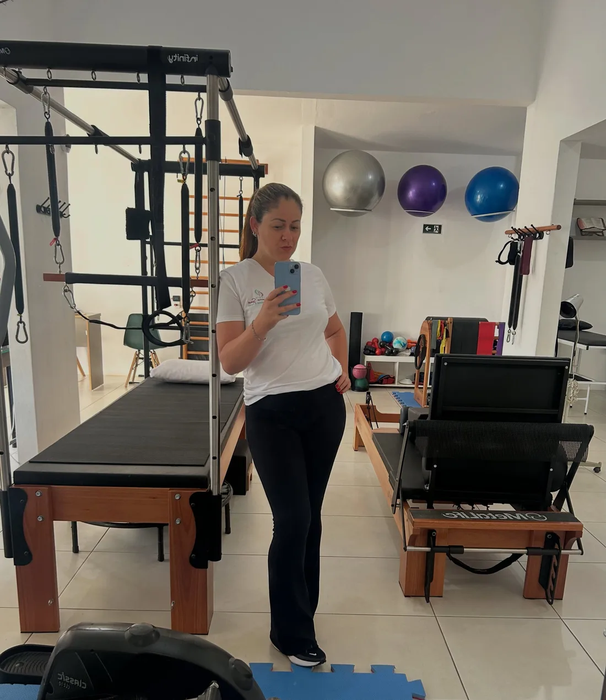
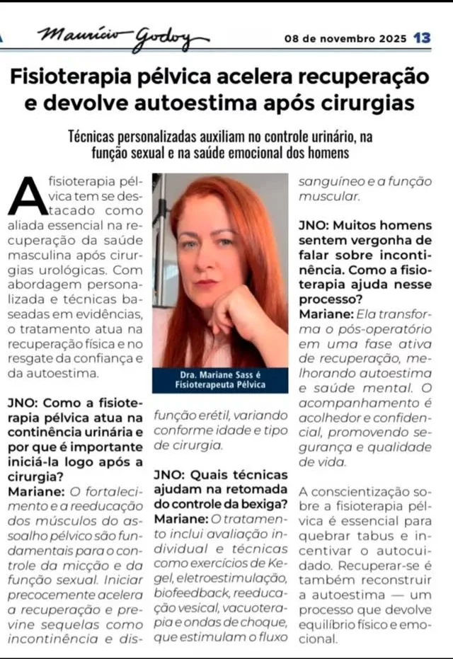
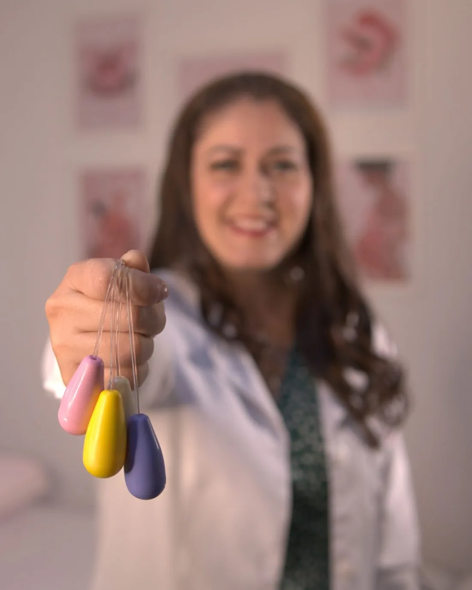
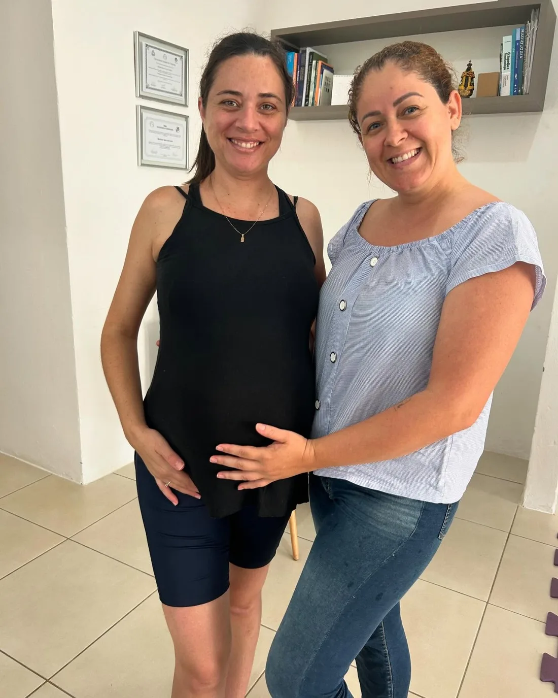
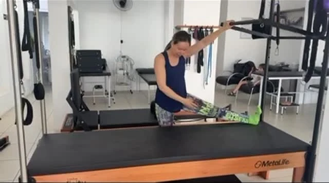

★★★★★
“A Mari é uma profissional incrível e atenciosa. Me ajudou muito com meu problema e foi paciente em cada percurso do caminho.”
Escape de xixi, dor na relação e desconforto na gestação são comuns, mas não precisam ser o seu normal. Fisioterapia pélvica, obstétrica, oncológica e pilates, com atendimento individual.

Toque na opção mais parecida com o que acontece com você. A conversa no WhatsApp já começa com o assunto, sem precisar explicar tudo.
Conteúdo informativo. Só a avaliação individual define o diagnóstico fisioterapêutico e o tratamento.
Arraste. A fisioterapia pélvica é indicada na gestação qualquer que seja a via de parto, inclusive na cesárea, e quanto antes começar, melhor.
Muitas mudanças e muitas dúvidas. Hora de conhecer o assoalho pélvico e começar a prevenção.
Costuma ser a fase mais tranquila. Boa para fortalecer, trabalhar a postura e treinar a respiração.
A reta final. Cuidado com dores nas costas e na pelve, e preparo do corpo para o parto.
Um minuto para sentir o assoalho pélvico: contraia como se segurasse o xixi, sem prender a respiração, e solte por completo. Solte é tão importante quanto contrair.
Só para percepção do corpo, não é prescrição. Se sentir dor, pare. Se está gestante ou operou há pouco, fale com a Mari antes.
“Ela transforma o pós-operatório em uma fase ativa de recuperação.”
Mariane Sass, em entrevista sobre fisioterapia pélvica masculina.

“A Mari é uma profissional incrível e atenciosa. Me ajudou muito com meu problema e foi paciente em cada percurso do caminho.”
“Excelente tratamento de fisioterapia do assoalho pélvico, mesmo sendo pelo convênio médico. Profissional respeitosa, atenciosa e boa ouvinte.”
“Fiz várias sessões de fisioterapia na minha vida, mas com essa profissional foi a melhor que fiz.”
“Uma profissional excelente, super comprometida com seus pacientes além de ser super humana e acolhedora.”
“Iniciei as seções com muitas dores no joelho e agora estou bem melhor! Eu recomendo!”
“Procurei para sessões de fisioterapia em razão de uma fratura no pé e ela me acolheu muito bem.”



É comum, mas não é normal. Muita gente convive com isso achando que não tem jeito, e a incontinência urinária tem tratamento.
Sim. A fisioterapia pélvica é indicada na gestação independentemente da via de parto.
O mais breve possível. Quanto antes começar, mais benefícios você tem na gestação e no pós-parto.
Sim, principalmente após cirurgias urológicas, como a retirada da próstata. O trabalho ajuda no controle urinário e na função sexual, em atendimento confidencial.
Não. A fisioterapia pélvica é um tratamento de saúde, com avaliação individual e objetivo terapêutico.
Já divulgou atendimento por São Lucas Saúde e Sepaco. Consulte pelo WhatsApp se o seu plano é aceito hoje.
Conte o que está acontecendo, no seu tempo. A Mari responde e combina a avaliação com você.
Chamar no WhatsApp